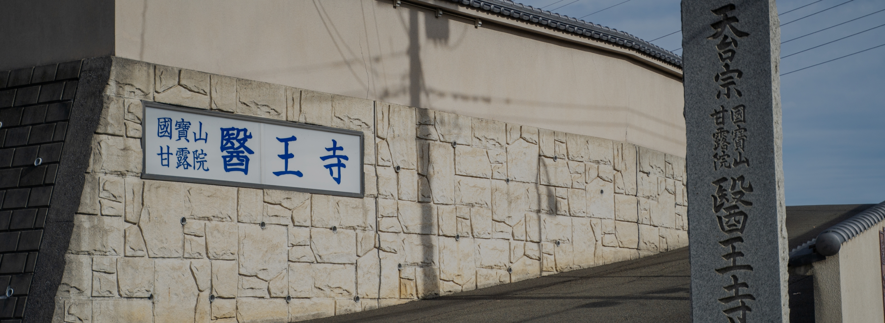

檀家の皆様へ
お盆法要のお知らせ
当寺では皆々様方に寺へご来寺願い、お盆の総回向を執り行います。
ご先祖様への供養法要ですので、ご多忙中恐縮に存じますがご来寺ご参拝くださいますようご案内申し上げます。
7月13日 当山本堂にてお盆法要開始
8月13日 当山本堂にてお盆法要開始
- 7月と8月両方行います。
- 法要終了後、盆提灯に灯をお入れになり、各家ご先祖をお迎え願います。盆提灯は寺にて用意いたします。
- 盆塔婆（1本3000円）を申し込まれる方は所定の用紙に記入の上、FAXまたは郵送ください。メールフォーム もご利用いただけます。
- 棚経（寺より各家へ出向き、読経すること）は失礼いたします。
法事・塔婆申し込み
法事の申し込みはこちらからどうぞ。お申し込みはメールフォームかPDFファイルのFAX送信をお選びいただけます。
法事は当日の3ヵ月前、塔婆は当日の5日前までにお申込ください。
-
塔婆のみ申込
塔婆のみの申し込みは以下のメールフォームからお願いいたします。
メールフォームから申し込む
（リンク先が表示されない場合はページを再読み込みしてください。） -
春秋彼岸・施餓鬼・お盆・新盆塔婆申込
-
■メールフォームからお申し込みの方はこちら
メールフォームから申し込む -
■FAXでお申し込みの方はこちら
※お塔婆を6本以上お申込の方は、PDF申込用紙に記入の上、FAXにて送信してください。
-
-
法事申込
-
■メールフォームからお申し込みの方はこちら
メールフォームから申し込む -
■FAXでお申し込みの方はこちら
※お塔婆を6本以上お申込の方は、PDF申込用紙に記入の上、FAXにて送信してください。
法事用 お塔婆申込PDF
-